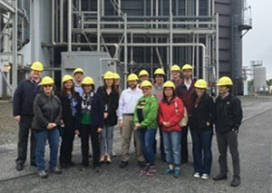
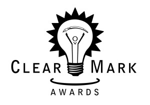
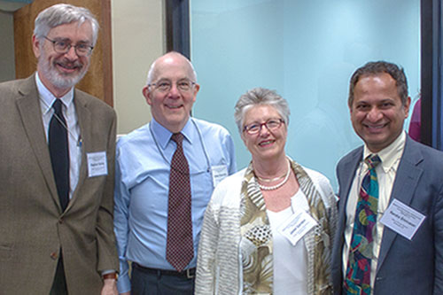

{kind=link}
{kind=link}
About EIA
Inside EIA
OEA and OES staff see natural gas in action
May 26

On May 10, 2016, EIA employees from the Office of Energy Analysis (OEA) and the Office of Energy Statistics (OES) toured the NAES Brandywine Power Facility in Brandywine, Maryland. The combined-cycle plant burns natural gas from the Marcellus shale to produce 230 megawatts of electricity. Natural gas combustion drives two gas turbines, and excess heat is harvested to produce the steam that drives a third turbine. Using heat that would otherwise go to waste increases the plant's overall efficiency and reduces the cost per kilowatthour.
When the EIA employees arrived, the plant's general manager and an engineer gave a presentation about the power plant, explaining that its overall function is to provide reliable energy to the Washington, DC area. The EIA employees had an opportunity to ask questions about natural gas economics and logistics, electricity generation and black start capability, and three larger gas-fired power plants under construction in the area. Many people took advantage of this opportunity before they headed out to the tour.
The first stop was the control room, where the numbers and graphics blinking on each computer monitor showed the plant's real-time operational status (as dispatched by PJM, a regional transmission organization). Next, everyone had to put in earplugs before heading out to see the turbines. The turbines were so loud, the entire warehouse was lined with soundproofing materials to prevent noise pollution in the surrounding area. The turbines were as tall as a person, and their vibrations were so strong that the EIA employees could feel them through the handrails and floors. Once outside the buildings, earplugs came out, and the EIA employees saw the gas line that delivers fuel to the plant, which is not only for generating electricity, but also for the backup diesel generator and the plant's cooling tower. All in all, it was a fun and educational trip that provided valuable insight into the natural gas and energy industry!
--Nicholas Skarzynski, Office of Energy Analysis
{kind=link}
EIA brings back third national ClearMark Award from the Center for Plain Language
May 13
On Tuesday, May 10, staff from the Office of Communications (OC) attended an awards banquet and ceremony at the National Press Club to accept EIA's latest ClearMark Award—this time an Award of Distinction for our 2015 EIA Writing Style Guide.
The ClearMark Awards are given yearly by the Center for Plain Language to the best plain language documents and websites from government agencies, nonprofit organizations, and private companies. Entries are judged by a panel of international experts, following strict criteria.
Our style guide competed against all entrants in the category of original document (long format) and was selected as a finalist, along with eight others—six health care organizations, AARP, and the Consumer Financial Protection Bureau. This was the first year that our guide was in competition with private and public sector organizations, instead of just other government agencies, and it was certainly heartening to see it recognized among such an impressive group of contenders.
Previously, EIA's 2013 Writing Style Guide was selected as the ClearMark category winner for best Public Sector Original Document, and Energy Explained was selected as a 2010 ClearMark Award of Distinction winner in the Best Website category.
Congratulations to Colleen Blessing, Dale Sweetnam, and all the OC staff who, day in and day out, ensure that EIA's content is clear, concise, and accessible!
--Gina Pearson, Office of Communications
{kind=link}
EIA meets with ASA Committee on Energy Statistics
April 25
The 2016 American Statistical Association Advisory Committee on Energy Statistics (ASA) spring meeting was held in the CoLab on Thursday and Friday, April 14–15. The committee was impressed with the quality of the presentations, the topic selections, and the innovative work that EIA continues to do throughout the year.
EIA meets with the ASA committee every spring and fall to get advice on improving EIA's methods for surveys, projections, and analyses. This collaborative relationship began over thirty years ago. These biannual meetings help us identify quality improvements for EIA programs. The committee is composed of experts in energy research, economics, statistical analysis, and data modeling. The ASA committee chair is Max Auffhammer, University of California at Berkeley. Under his leadership, ASA committee members have had access to the presenters before these meetings, which has helped the committee members provide more insightful comments and suggestions to EIA.
In his opening remarks, Adam Sieminski, EIA Administrator, reported that EIA received $122M for fiscal year (FY) 2016 compared with $117M for FY15. The 2016 budget increase will help EIA expand its scope, build new data series, and pursue its strategic priorities. Adam also welcomed two new ASA committee members: Robert Bell of Google Corporation and Dr. Tim Coburn, a professor of Energy and Operations Management at the University of Tulsa. Adam congratulated EIA employee, Renee Miller, who was selected as an ASA Fellow. This fellowship is a significant honor in the statistical community. Adam thanked Janet Gordon, the ASA meeting coordinator, for her work over the years and wished her the very best. Janet will retire at the end of May.
Thursday's presentations included:
{kind=link}
- Tom Leckey, Green Button Data
- Terry Yen and David Manowitz, Global Hydrocarbons Supply Model Project
- Joelle Michaels, New Analysis of 2012 CBECS
- Eileen O'Brien, Midfield Adjustments to 2015 RECS
- Vipin Arora, Oil Consumption Weighted GDP
- David Daniels, Automatic Model Calibration-Experience with GCAM
- Sean Hill, Adding Short-Term Refinery Modeling to the Short-Term Energy Outlook
- Preston McDowney, Edits and Corrections Standardization
- Nanda Srinivasan, Gasoline Station Listings
- David Kinyon, Variance Estimation of Weekly Changes in Underground the Natural Gas Storage Report
- Doug MacIntyre, Deriving Weekly Exports with International Trade Data System from Customs & Border Patrol/Census
- Mike Conner, Data Harmonization—North America
Thank you to the ASA planning team members who organized this event: Renee Miller, Janet R. Gordon, Lawrence Stroud, Tom Broene, and Terry Yen.
Visit the ASA Committee on Energy Statistics webpage for a list of committee members, their affiliations, and terms.
--Janet Gordon, Office of Survey Development and Statistical Integration
Knitting and crocheting for charity
March 15
The EIA knitting team has a cadre of devoted knitters and crocheters who meet every Wednesday at 12:00 noon in the CoLab.
Dale's presentation focused on ways government social media managers can breathe life into their agency's social media programs. Dale discussed the importance of having a social media strategy, the value of social media planning, and the benefits of setting lofty social media goals.
Thanks to the efforts of Claudia Hernandez, Carolyn Moses, Pia Cajuguiran, Natalie Ko, Patty Breed, and Carol White, the team created 12 cotton washcloths and 25 preemie and newborn hats. The group will donate the hats to the Children's Hospital, and they will donate the washcloths to the House of Ruth, a Washington, DC women's shelter. The group is now reviewing ideas for their next project.
Although the group's focus was to create items for charity, the group also formed bonds with people across many EIA offices. Consider joining the team—no experience is necessary! The small but enthusiastic group has good teachers.
--Carol B. White, Office of Energy Consumption and Efficiency Analysis
About EIA
- Our Work
- EIA News and Events
-
Items of interest to future employees and EIA alumni
- EIA Staff and News
- Alumni Corner
- Our Organization
- Budget, Plans & Performance
- Our History
- EIA Conference
- Policies & Procedures
- Information Quality Guidelines
- EIA Standards Manual
- Statement of Commitment to Scientific Integrity by Principal Statistical Agencies
- Accessibility
- EIA Writing Style Guide
- Copyrights & Reuse
- Freedom of Information Act
- Privacy Statement & Security Policy
- Publishing Priorities & Schedule
- CIPSEA Reporting
- About Our Website